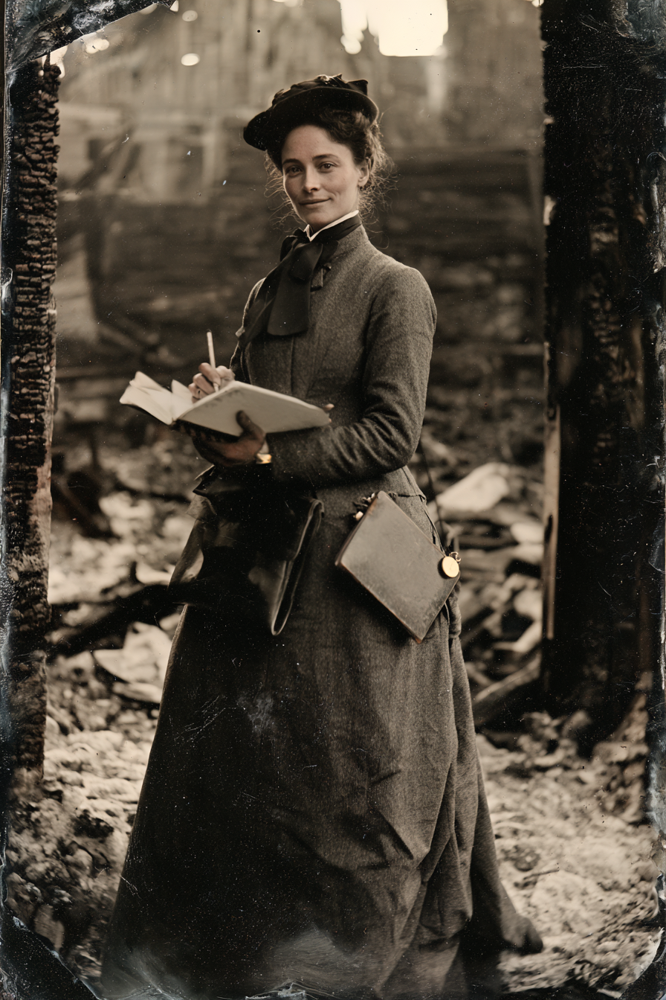

Archetyp: AGENT (Agenten)
Deckname: Mrs. Della Hyde, Schadensreguliererin, Great Plains Mutual Assurance Company of Chicago**
Ihr Verlust tut ihr sehr leid, und sie würde gern die Leiche sehen.
| Agility | d6 | 1 |
| Smarts | d8 | 2 |
| Spirit | d8 | 2 |
| Strength | d4 | 0 |
| Vigor | d4 | 0 |
| Skill | Attr. | Die | Pts. |
|---|---|---|---|
| Fighting | Agi | d6 | 2 |
| Shooting | Agi | d6 | 2 |
| Occult | Sma | d6 | 2 |
| Persuasion | Spi | d8 | 2 |
| Performance | Spi | d6 | 2 |
| Notice | Sma | d6 | 1 |
| Stealth | Agi | d6 | 1 |
Hintergrund. Cordelia Ashgrove war eine Versicherungsangestellte in Chicago mit einer Gabe dafür, eine Lüge auf dem Papier zu erkennen — so fanden Pinkertons Leute sie: sie meldete elf betrügerische Brandschäden in einem Monat, und der zwölfte stellte sich als überhaupt nicht betrügerisch heraus. Die Agency schickte sie ’81 durch den Lehrgang und gab ihr eine Gatling-Pistole, die sie genau zweimal abgefeuert hat, beide Male in Innenräumen, beide Male auf etwas, das nicht tot blieb. Sie war noch nie etwas anderes als freundlich zu jemandem, den sie ruiniert hat. Ihre Tarnung ist kein Kostüm — sie hält tatsächlich eine Regulierervollmacht, reicht echte Papiere ein und zahlt mit Agency-Geld echte Schäden aus, denn eine Frau, die einer Witwe vierhundert Dollar in die Hand drückt, ist eine Frau, mit der diese Stadt für immer redet. Sie reitet mit der Posse, weil Denver sie darauf angesetzt hat: die Leute tauchen ständig zuerst an den Orten auf, die sie begutachten soll, und Ashgroves stehende Empfehlung lautet, es sei billiger, eine Posse zu lenken, als sie zu begraben. Inzwischen mag sie sie, was sie nicht gemeldet hat, weil das die Art Sache ist, für die man versetzt wird.
Tarnung, Führungsoffizier, stehende Befehle. - Die Tarnung. Eine Schadensreguliererin darf alles tun, was ein Spion braucht, und wird dafür auch noch bedankt: eine ausgebrannte Scheune besichtigen, totes Vieh zählen, eine Leiche untersuchen, die Bücher einer Stadt lesen, eine trauernde Familie genau fragen, was sie gesehen hat, und „für die Akte“ fotografieren. Ihre Papiere sind echt. Der Chiffreschlüssel liegt im Deckel ihrer goldenen Taschenuhr. - Der Führungsoffizier. Special Agent-in-Charge Ambrose Teague, Außenstelle Denver. Kontakt per Telegramm an Kettering & Sons Mercantile, Denver, in Handelscode — Schadensnummern sind Fallnummern, Dollarbeträge sind Furchtlevel-Einschätzungen, und „die Police ist erloschen“ heißt: die Agency zieht sich zurück, verschwinde. Teague ist ihr nie persönlich begegnet und hat es auch nicht vor. - Stehende Befehle (am Tisch wörtlich vorlesen, wenn der Marshal die Schrauben anziehen will): 1. Vorrang. Unter dem Twilight-Protokoll kooperieren Sie mit Territorialen Rangern und der Twilight Legion. Sie ordnen sich ihnen nicht unter. Alles, was Geisterstein berührt, ist Sache der Agency. 2. Einschätzen, dann eindämmen. Schätzen Sie das örtliche Furchtlevel. Wo es gesenkt werden kann, senken Sie es. Wo nicht, empfehlen Sie Evakuierung oder Quarantäne — ein Gefallen im Wert von 4, den Sie nicht haben. 3. Zeugen bewirtschaften. Jede Schilderung des Übernatürlichen, die in Druck geht, ist zu korrigieren. Kaufen Sie sie, diskreditieren Sie sie oder setzen Sie die Zeitung unter Druck. Körperliche Maßnahmen erfordern eine Befugnis, die Sie derzeit nicht haben. 4. Inventarisieren. Aller angetroffene Geisterstein und alle Höllenmaschinen sind Eigentum der Vereinigten Staaten. Seriennummern erfassen. Das gilt auch für Geräte in den Händen befreundeter Parteien. 5. Irreguläre benennen. Melden Sie die Identität von Twilight-Legion-Kontakten, Gepeinigten und Taschenspielern, mit denen Sie arbeiten. Melden ist keine Anwerbung. Warnen Sie sie nicht, dass sie auf einer Liste stehen.
Befehl 4 heißt irgendwann, dass sie die Hand auf die Erfindung des verrückten Wissenschaftlers der Posse legt. Befehl 5 heißt, dass sie die Namen aller am Tisch längst aufgeschrieben hat.
Build. Geschicklichkeit W6, Verstand W8, Geist W8, Stärke W4, Konstitution W4 · Parade 5, Robustheit 4 Kämpfen W6, Schießen W6, Okkultismus W6, Überreden W8, Auftreten W6, Bemerken W6, Heimlichkeit W6 Talente: Agent, Charismatic (Charismatisch), Strong Willed (Starker Wille) Handicaps: Ruthless (Skrupellos) — Major: sie tut, was die Akte verlangt. Die Freundlichkeit ist keine Lüge, sondern eine Technik. · Suspicious — Minor · Vow (Gelübde) — Minor: auf die Vereinigten Staaten; das Buch nennt das ausdrücklich als die einzige echte Anforderung an einen Agenten Ausrüstung: Gatling-Pistole .36 in einer Ledermappe, nie vor Zivilisten gezogen · Agency-Ausweis und Marke · Derringer .41 in der Kleidertasche · Verkleidungszubehör · Dietriche · Golduhr mit Chiffreschlüssel im Deckel · Handschellen · ein gutes Reisekleid · Pferd Schlimmster Albtraum (Erschaffungsschritt 9): dass die Agency in allem recht hat und die richtige Antwort tatsächlich lautet, die Stadt niederzubrennen.
Aufhänger. Vor zwei Jahren regulierte sie in Cheyenne einen Brandschaden — neun Tote, alles Kinder, „defekter Rauchabzug“. Sie schrieb den Bericht selbst. Es war kein Rauchabzug, und das Ding, das es getan hatte, ging aus der Asche im Gesicht eines Untermieters heraus und schüttelte ihr auf der Vortreppe die Hand, und sie ließ es gehen, weil Eindämmung der Befehl war und ihr keine Gefallen mehr blieben. Seither jagt sie dieses Gesicht still, in ihrer eigenen Zeit, außerhalb der Bücher — und darum drängt sie die Posse zu Aufträgen, die nichts einbringen. Taucht es auf, wird sie jeden Gefallen ausgeben, den sie hat, und jeden, den sie nicht hat, und Teague wird es erfahren.
Warum es Spaß macht. Du bist die umgänglichste Person in jedem Raum und hältst dabei eine Liste aller Anwesenden in der Hand — und die besten Momente kommen, wenn die Gruppe dir eine direkte Frage stellt und du live entscheiden musst, ob die Wahrheit oder die Tarnung die Nacht übersteht.
Regelgrundlage: Regelnotizen · Archetyp-Notizen